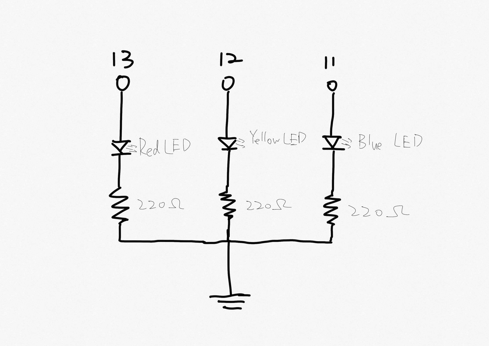

Overview
I have created a schematic for 3 LEDs connected to my Arduino, and I also implemented it as a circuit on my breadboard. I have also write firmware for the circuit that makes the LEDs blink in a pattern.

Schematic
- I have first calculated the appropriate resistance for each LEDs. The blue LED has a different voltage drop with the red and yellow LEDs. I calculated them separately.
- Then with the value of resistor, I have drew the schematic for the circuit. 

Circuit
According to the schematic, I have built the circuit with Arduino on the breadboard.

Firmware
// create an integer for delay time
int thisTime = 1000;
/* create an array for the pin that will be set as high voltage in a
sequence, one pin appears twice to create the returning blinking effect */
int highPins[] = {13, 12, 11, 12};
/* create an array for the two pins at the low voltage corresponds to the
pin in the high voltage at the time */
int lowPins[] = {11, 12, 11, 13, 12, 13, 11, 13};
// the setup function runs once when you press reset or power the board
void setup() {
/* create a for loop in a length of 3 that could ignore the repetition
in the highPins array*/
for (int i = 0; i < 3; i++) {
//initialize digital pins in the highPins array as an output
pinMode(highPins[i], OUTPUT);
}
}
// the loop function runs over and over again forever
void loop() {
/* create a for loop to go through the highPins array with repetition */
for (int i = 0; i < 4; i++){
// set the i th element in the highPins array as high voltage, turn LED on
digitalWrite(highPins[i], HIGH);
/* set the i*2 th element in the lowPins array as low voltage since every
two elements in the lowPins array corrensponds to one element in highPins
array */
digitalWrite(lowPins[i*2], LOW);
/* set the i*2+1 th element in the lowPins array as low voltge since every
two pins need to be set as low voltage for one pin in high voltage */
digitalWrite(lowPins[i*2+1], LOW);
// delay the current situation for the time created previously (1 second)
delay(thisTime);
}
}